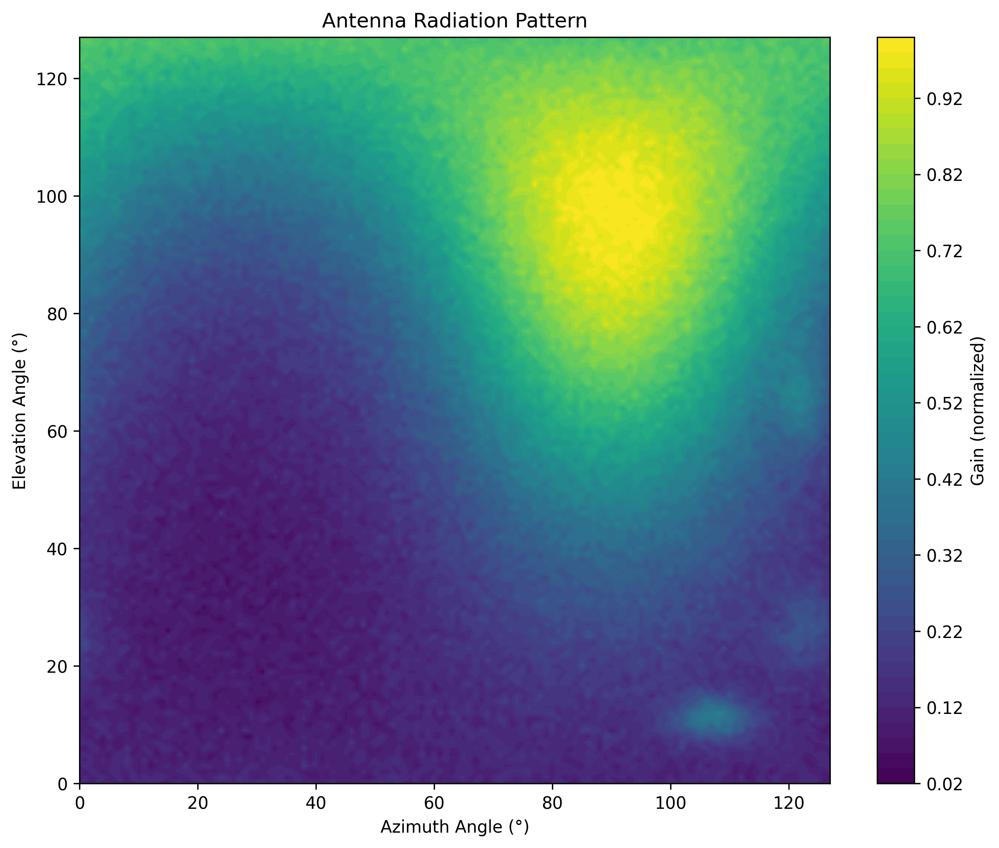
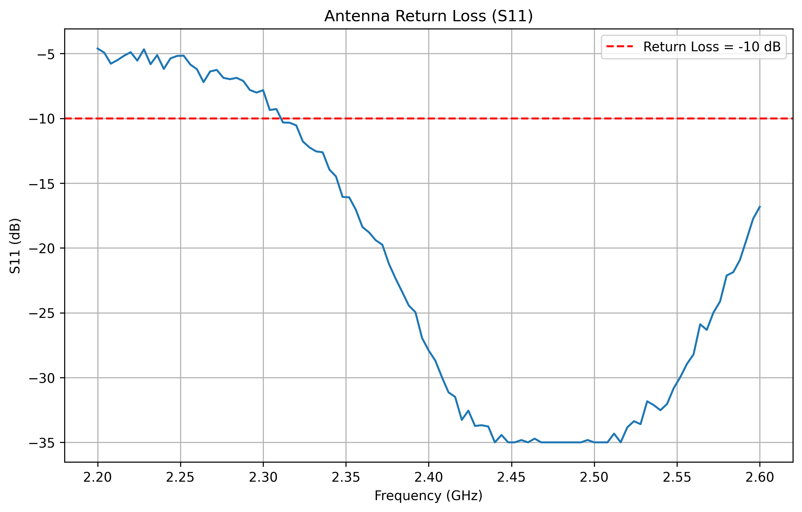
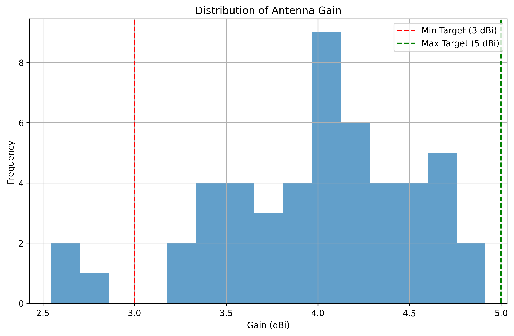
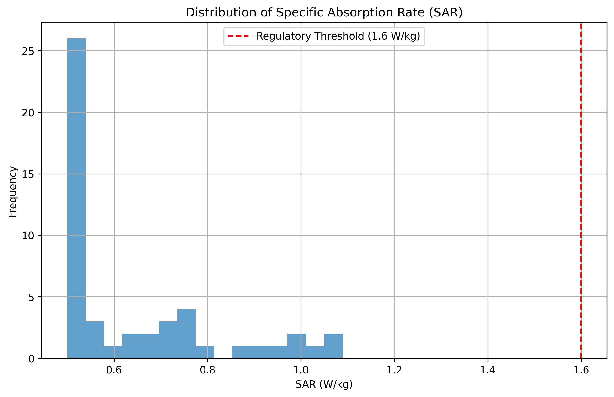
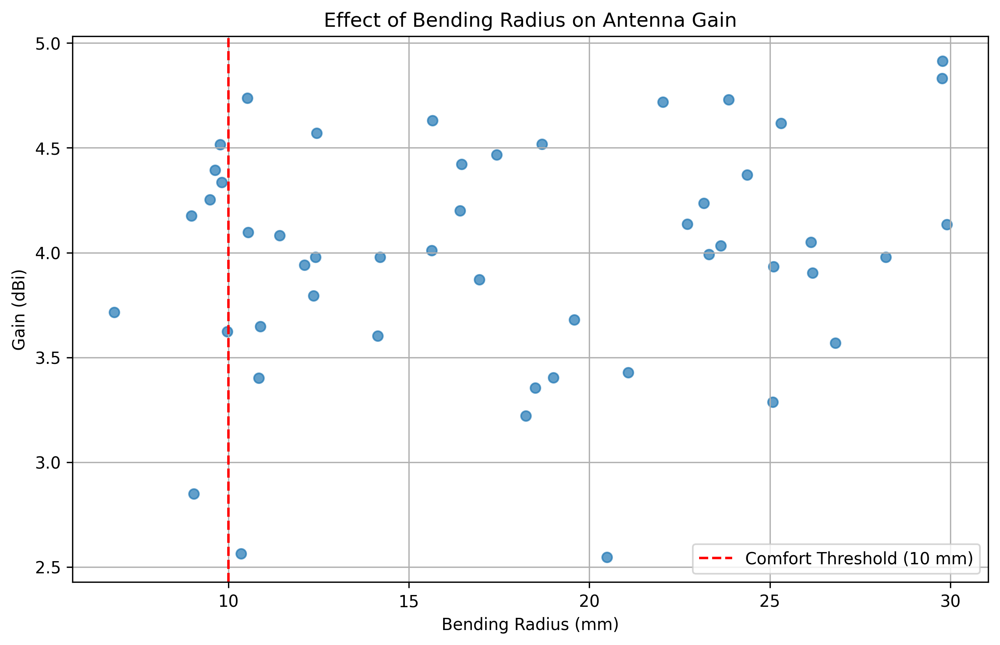
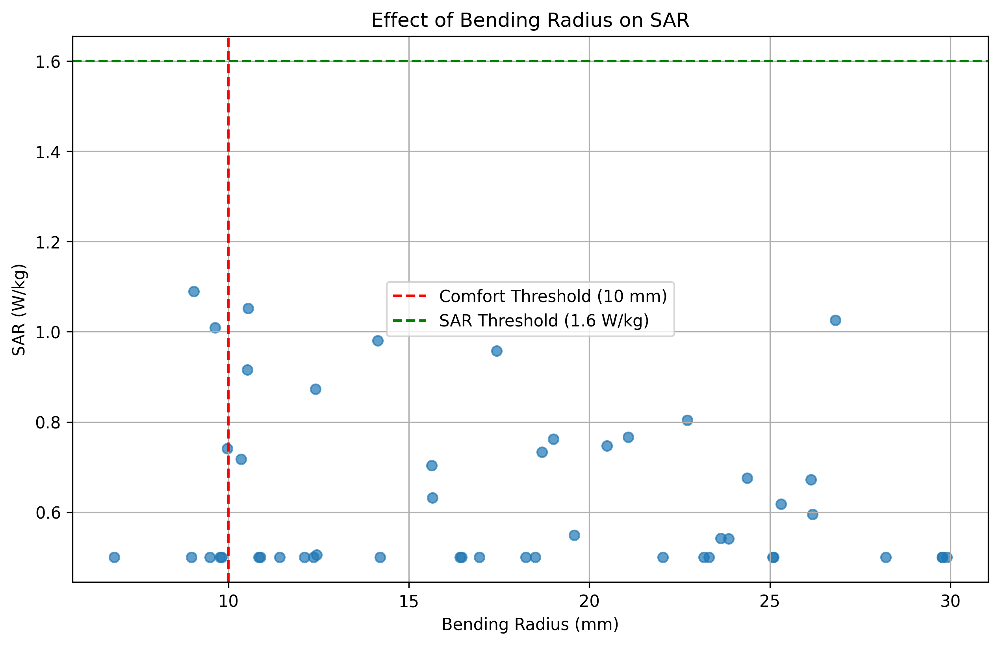

This report presents the analysis of synthetic data generated for textile-based wearable antennas operating in ISM bands (2.4 GHz and 5.8 GHz) for healthcare applications.
The dataset consists of 50 synthetic antenna designs with the following characteristics:
94% of designs
Target met by 47 out of 50 designs
100% of designs
Target met by all 50 designs
84% of designs
Target met by 42 out of 50 designs
80% of designs
40 out of 50 designs meet all criteria
2D visualization of the antenna radiation pattern showing the directional characteristics.
S11 parameter showing antenna return loss across the frequency range. Lower values indicate better impedance matching.
Distribution of antenna gain values across all designs. Target range is 3-5 dBi.
Distribution of Specific Absorption Rate (SAR) values. All designs meet the regulatory limit of 1.6 W/kg.
Scatter plot showing the relationship between bending radius and antenna gain.
Scatter plot showing the relationship between bending radius and SAR values.
